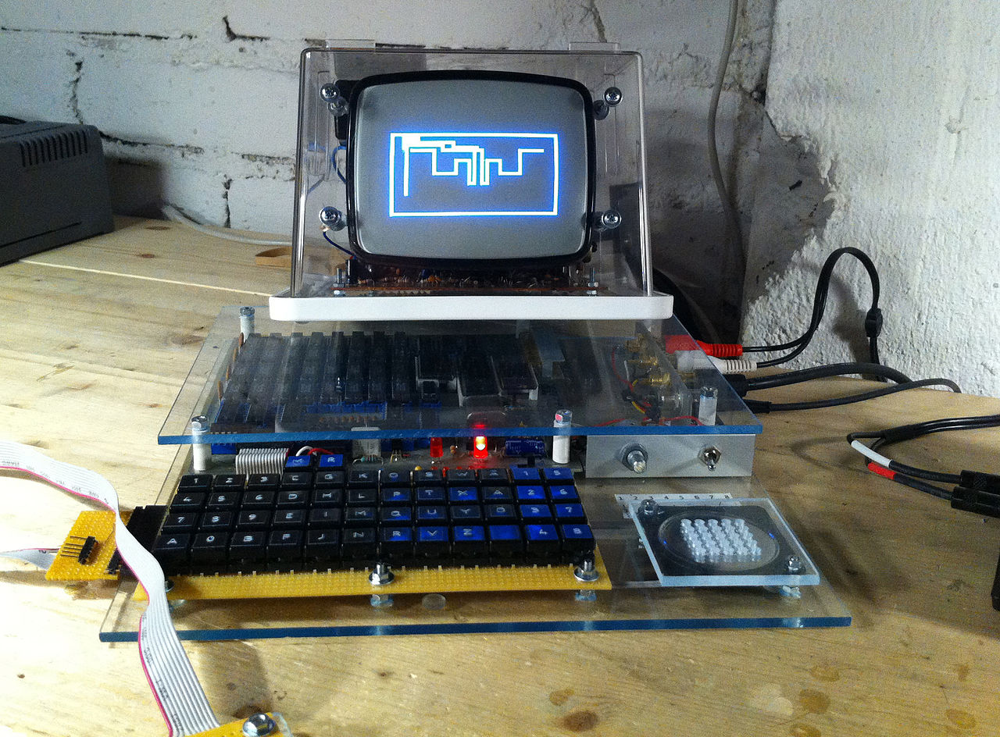

History
The Snake design dates back to the arcade game Blockade, developed and published by Gremlin in 1976. It was cloned as Bigfoot Bonkers the same year. In 1977, Atari, Inc. released two Blockade-inspired titles: the arcade game Dominos and Atari VCS game Surround. Surround was one of the nine Atari VCS launch titles in the US and was sold by Sears under the name Chase. That same year, a similar game was launched for the Bally Astrocade as Checkmate.
The first known home computer version, titled Worm, was programmed in 1978 by Peter Trefonas for the TRS-80, and published by CLOAD magazine in the same year. This was followed shortly afterwards with versions from the same author for the Commodore PET and Apple II. A clone of the Hustle arcade game, itself a clone of Blockade, was written by Peter Trefonas in 1979 and published by CLOAD. An authorized version of Hustle was published by Milton Bradley for the TI-99/4A in 1980. The single-player Snake Byte was published in 1982 for Atari 8-bit computers, Apple II, and VIC-20; a snake eats apples to complete a level, growing longer in the process. In Snake for the BBC Micro (1982), by Dave Bresnen, the snake is controlled using the left and right arrow keys relative to the direction it is heading in. The snake increases in speed as it gets longer, and there's only one life.
Nibbler (1982) is a single-player arcade game where the snake fits tightly into a maze, and the gameplay is faster than most snake designs. Another single-player version is part of the 1982 Tron arcade game, themed with light cycles. It reinvigorated the snake concept, and many subsequent games borrowed the light cycle theme.
Starting in 1991, Nibbles was included with MS-DOS for a period of time as a QBasic sample program. In 1992, Rattler Race was released as part of the second Microsoft Entertainment Pack. It adds enemy snakes to the familiar apple-eating gameplay.
Serpent
Serpent is a Game Boy Puzzle game developed by Naxat Soft. It was
released in 1990 for the North American and Japanese markets.
In the future, there is a sport called Serpent. Two fighters
in serpentine robotic machines try to box each other in to win the
fight. The serpents are detailed in the fact that they aren't just a
line, giving a greater sense of realism to the game. Each snake has
a fixed number of lives; with losing a life being a representation
of "losing the war." The "game over" message is a simple message
saying "the bitter taste of defeat" with an animated picture of a
snake crying and accompanied by a melancholic music in a waltz
rhythm. There are two modes with four difficulty levels; level 1 is
considered to be the easiest (normal speed and enemy performance)
while level 4 is the hardest (fast speed and enemies are likely to
cheat death). The first mode allows players to simply compete
against an opponent while the second mode brings in a series of
small snakes that emerge when players take too long conquering a
level.Missiles can be launched when the player collects them on the
field. White numbers help the player develop a longer body while
black numbers make the body shorter. Missiles can either make the
enemy faster (black missiles) or slower (white missiles). Winning 7
of the 13 possible matches automatically makes the player into the
"champion of serpents."
Meerca Chase
Meerca Chase is a snake game available on Neopets.
Neopets is
a virtual pet website. Users can own virtual pets ("Neopets"), and
buy virtual items for them using one of two virtual currencies. One
currency, called Neopoints, can be earned within the site, and the
other, Neocash, can either be purchased with real-world money, or
won by chance in-game.
Slither.io
Slither.io is a multiplayer online video game available for iOS, Android, and web browsers, developed by Steve Howse. Players control an avatar resembling a snake, which consumes multi-colored pellets, both from other players and ones that naturally spawn on the map in the game, to grow in size. The objective of the game is to grow the longest snake in the server. Slither.io is similar in concept to the popular 2015 web game Agar.io and is reminiscent of the classic arcade game Snake. The game grew in popularity following its promotion among several prominent YouTube users such as PewDiePie, and topped the App Store soon after its release. Slither.io's browser version was ranked by Alexa as one of the 1,000 most visited sites by July 2016, while the iOS version ranked first in the most downloaded apps on the App Store. A mobile version of the game for Android was released on March 27, 2016. The reception of the game was positive, with reviewers praising its appearance and customization but criticizing it for its low replay value and the high price users must pay to remove advertisements.

In 2017, Google released a version of the game as an easter egg, whenever the phrases "snake", "play snake", "snake game" and "snake video game" are typed.
Nokia phones
-
Nokia puts Snake on the majority of their phones:
- Snake – The first published by Nokia, for monochrome phones. It was programmed in 1997 by Taneli Armanto of Nokia and introduced on the Nokia 6110.
- Snake II – Included on monochrome phones such as the Nokia 3310 from 2000.
- Snake Xenzia – Included on later-model monochrome phones (and most cheaper colour phones, such as the Series 30 and Series 30+ budget mobile devices).
- Snake EX – Included on colour phones. First introduced with the Nokia 9290 Communicator in 2002. It supports multiplayer through Bluetooth and Infra-Red.
- Snake EX2 – Introduced with the Nokia 3100 in 2003 and included in several Series 40 handsets.
- Snakes – A 3D version designed for the N-Gage in 2005. It featured multiplayer through Bluetooth. Later Nokia started preinstalling it (without multiplayer) on some Nseries smartphones like N70, N73, N80, etc. It can be downloaded from Nokia support pages and played on any S60 device.
- Snake III – A 3D version, different from Snakes. Snake III takes a more living snake approach, rather than the abstract feel of Snakes. An example of a phone with it installed is the Nokia 3250 from 2005, and it supports multiplayer modes via Bluetooth.
- Snakes Subsonic - Sequel to Snakes, released on May 22, 2008 for N-Gage 2.0.
- Snake Xenzia (2017) - First released on the Nokia 3310.
- Snake (2017) - Released with Facebook Messenger (2017)